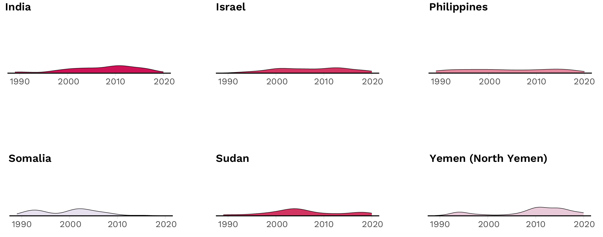
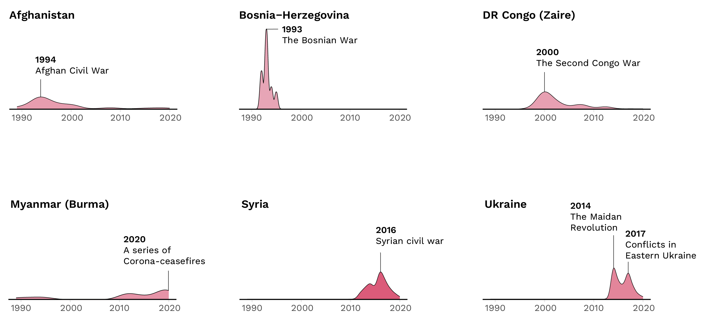
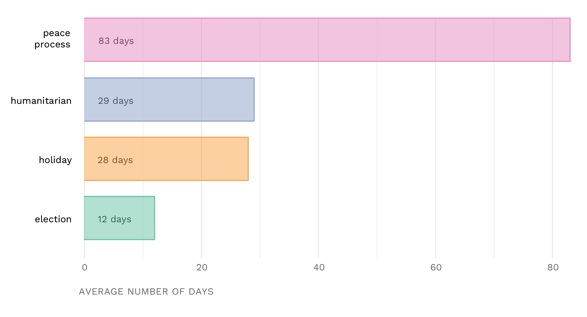

Geographical distribution of ceasefires in civil conflicts between 1989 and 2021
Here are the 12 countries with the most amount of ceasefires.
India tops the list with 296 ceasefires, followed by Sudan (277) and Syria (242).
For some countries, ceasefire periods are more or less spread over the years...
For others, ceasefires point to a very specific historical period.
All ceasefires share the same immediate objective: to stop violence. Yet beyond this common aspiration, ceasefires are likely to vary according to their underlying purpose.
peace process When conflict parties associate the arrangement with tasks relating to the peaceful resolution of the dispute, including fulfilling a precondition for negotiation, signaling a desire for dialogue, or as an outcome of an ongoing negotiation.
humanitarian At the point of initiation, a conflict party associates the arrangement with the provision of life-saving or relief distributing activities such as aid delivery, vaccinations, the release of hostages, or the evacuation of civilians from specific areas.
holiday At the point of initiation, a conflict party associates the arrangement with the celebration of some particular (typically religious) holiday, such as Christmas, Eid or Ramadan.
election When a ceasefire is initiated prior to, during, or following a local or national election.
While peace process dominates all ceasefires,
secondary reasons vary quite largely.
Americas is way more likely than other regions to have a ceasefire due to an election,
while the Middle East more often has ceasefires due to humanitarian reasons.
At the same time, a holiday is more likely to lead to a ceasefire in the Americas and Asia
compared to other regions.
Ultimately, the average duration of ceasefires initiated due to peace processes lasts much longer than that of others.
Data from Ceasefire Project, an ongoing collaboration between researchers from the Center for Security Studies (CSS) at ETH Zurich, the Peace Research Institute Oslo (PRIO), Uppsala University, mediation practitioners and technical ceasefire experts.